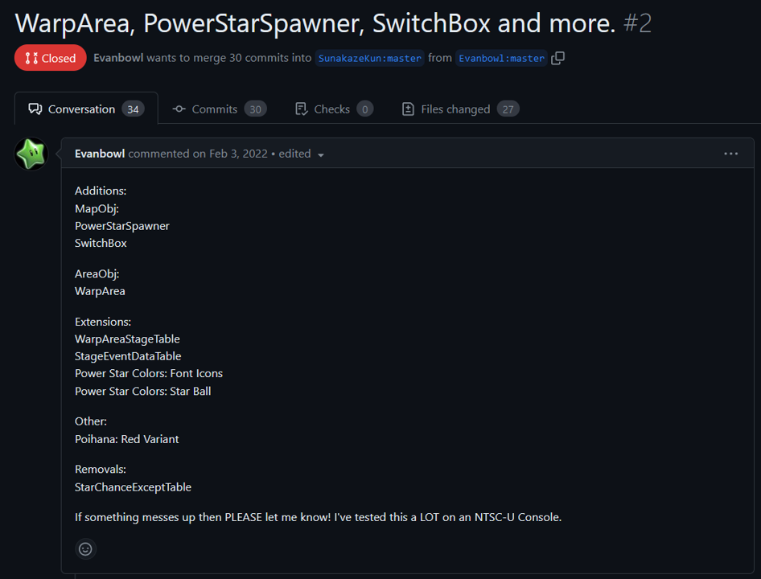
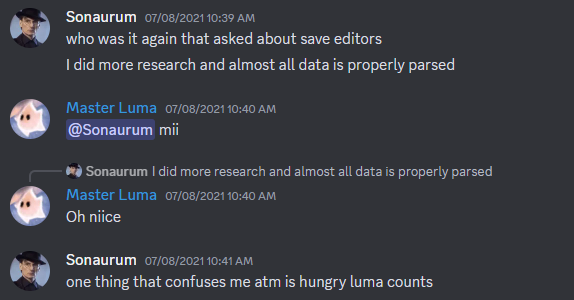
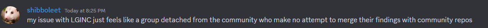

Statement
As you may have heard, Aurum and Shibboleet are leaving the community as of today. It is sad to see them go. Their contributions to SMG modding have impacted the community and inspired quite a few of us to try modding the game ourselves, which we are grateful for. However, there are some concerns that we need to address.
Splitting Up
Lord G. Inc was originally formed as a place for us to work on our fork of the SMG2 Project Template (PTD), which exists due to denied Pull Requests:

Our organization expanded to become a hub for custom code, like how SMGCommunity is a hub for reverse engineering. We have no intentions to take that away from SMGCommunity, and we have no intentions to become a hub for SMG modding guides. Our guides only focus on the code we've made. The only exception to this is a Custom Actor guide, that we hosted on our website but also offered to be hosted on the Luma's Workshop wiki. However, that never ended up happening.
Suppressing Code and Resources
In Aurum's statement, he claimed that he wanted to share knowledge, skills and code with the rest of the community. However, for his Neo Mario Galaxy project, he has not shared the following parts of his source code, despite being asked multiple times:
- The Stamp collectibles
- The Starbit Mushroom
- The Coin Mushroom
This is quite counterintuitive, as Aurum is actively talking about making code public to advance knowledge, but proceeding to keep part of his code private, not wanting it publicly available whatsoever, and explicitly stating that he does not want anybody to reverse engineer it, which at this point would be the only way to get said code.
Another example of this is a documentation of the SaveGame format, which he keeps private.

It is unjust to force everyone to make all things public, as some people may not be ready to do so. LGInc is appreciative and fully supports people who decide to make their projects open source for others to look at and learn from.
Contribution to the Community
Both Aurum and Shibbo have claimed our organization has kept code to ourselves and actively avoided sharing it with the rest of the community.

However, we believe this is a false claim as PTD is available to anyone, and is already being used in hacks like Super Mario Starshine, Super Mario Galaxy 63, Collector's Anxiety and Cosmos Collapse.
We unfortunately cannot make everything we work on public, as those are experimental features that still need extensive testing and development before being ready to use. However, whenever possible, we always try to publish our findings, and code for the rest of the community.
Misc.
- We do not stand for threatening other people with legal action as it is very childish.
- Also, we do not stand for trying to find a "scapegoat" for any kind of action. It is in our best interest to settle a conflict maturely.
- We want to state that splitting up from the rest of the community was not something we initially wanted to do. In an ideal world, we would have continued developing amongst the community and are still open to do so.
However, based on the reasons listed above, Lord G Inc. was formed to be able to keep working on Custom Code without barriers that we think are unnecessary.
Conclusion
Aurum and Shibboleet will be appreciated for their impact and care for the SMG Modding Community. It is sad to see them go, and we wish them both good luck with their future lives and a Happy New Year.
We are currently working with MTLenz, the new owner of Luma's Workshop, to figure out how to get the Community up again.